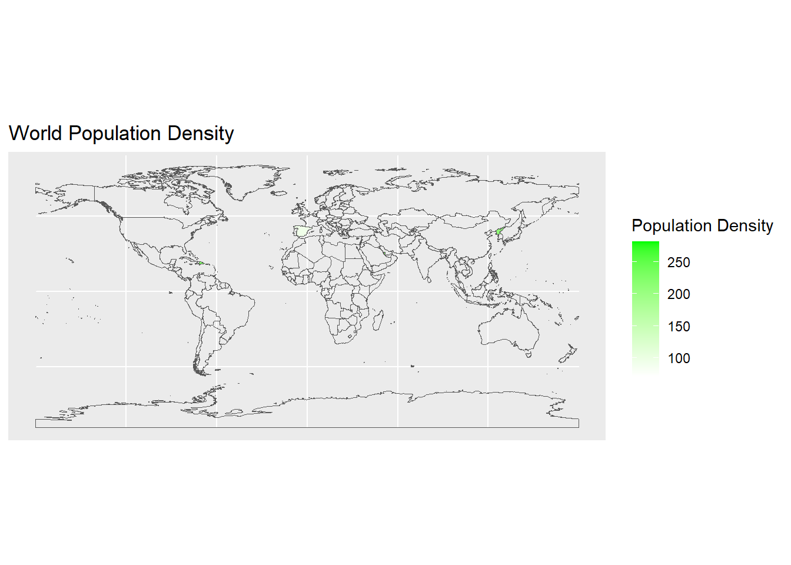

MT5000-Data Analytics & Visualization Assignment
What the Dashboard is about?
This report provides a comprehensive analysis of the global impact of the COVID-19 pandemic. Utilizing data from various sources, we present a series of visualizations that illustrate the spread and severity of the virus across different countries. The report includes a world map depicting population density, a bar chart of total cases by country, a scatter plot comparing total cases per million to total deaths per million, and a time-series line chart showing the surge of new cases over time. Each visualization offers unique insights into the pandemic’s progression, aiding in understanding the global health crisis better.
World Population Density
The first visualization in our report is a world map that illustrates population density across different countries. This map uses varying shades of green to represent the density of population, with darker shades indicating higher population density. The purpose of this visualization is to provide a global perspective on population distribution, which is a crucial factor in understanding the spread of COVID-19. Countries with higher population densities may face more significant challenges in social distancing and controlling the spread of the virus. This map serves as a foundation for our subsequent analyses, setting the stage for a deeper understanding of the pandemic’s global impact.
| Country | Observed Value - People per Sq./km. |
|---|---|
| Croatia | 73.726 |
| Cyprus | 127.657 |
| Dominican Republic | 222.873 |
| Ireland | 69.874 |
| Low Income countries | - |
| North Korea | 211.701 |
| Qatar | 227.322 |
| Saint Barthelemy | - |
| Saint Vincent and the Grenadines | 281.787 |
| Spain | 93.105 |
Total Covid-19 Cases till date
This chart represents the total number of COVID-19 cases per country. Each bar corresponds to a country, with the height indicating the total cases. The chart is sorted in descending order, allowing for a quick comparison of case loads across countries. It provides a snapshot of the global impact of the pandemic.
Comparative Analysis of COVID-19 Impact: Cases vs Deaths per Million by Country
This plot provides a comparative view of the total COVID-19 cases per million against the total deaths per million for each country. Each point represents a country, plotted according to its case and death rates. The red dashed line is a linear regression line, indicating the general trend across countries. This visualization helps us understand the severity of the pandemic in different countries, considering both infection and mortality rates.
COVID-19 Progression: New Cases Over Time Across Countries
This time-series plot provides a visual representation of the progression of COVID-19 new cases across all countries over time. Each line represents a country, with the color indicating the country’s name. The x-axis represents the date, while the y-axis represents the number of new cases. This visualization helps us understand the trend of new cases and how they have evolved over time in different countries. The legend on the right side of the plot provides a guide to identify each country’s line.